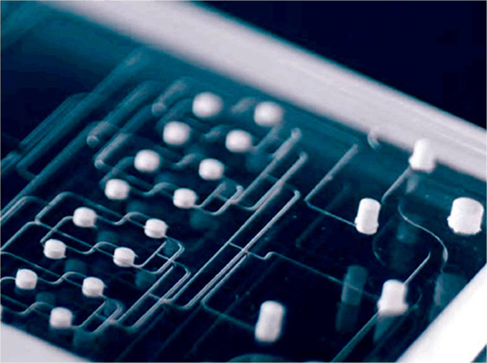
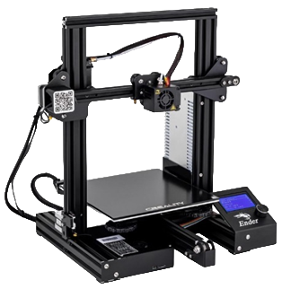
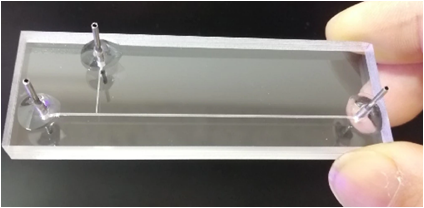

Микрофлюидика - одна из самых быстрорастущих областей инженерии, химии и биологии, с помощью которой
открывается возможность синтеза и анализа микродоз и микропотоков.
Микрофлюидные системы являются основой современных аналитических приборов для научно-исследовательских лабораторий и медицинской диагностики.
Микрофлюидные системы являются основой современных аналитических приборов для научно-исследовательских лабораторий и медицинской диагностики.
Создание нашей системы возможно без использования импортного оборудования и материалов, таким образом
ниже затраты на
транспортировку, меньше время ожидания, меньше вероятность возникновения проблем с логистикой.
Производство не требует
дорогостоящего оборудования, специального помещения, выполнимо малым количеством сотрудников. На выходе
получается
система с точностью повторяющая функционал зарубежных и отечественных аналогов, но на несколько порядков
ниже по
стоимости.


Наша команда разрабатывает микрофлюидные чипы двух видов, используя технологию производства на основе
сэндвич-структур полимер-стекло и технологию на основе силиконовых компаундов с многоуровневой сеткой
каналов и
интегрированными
источниками внешних воздействий.